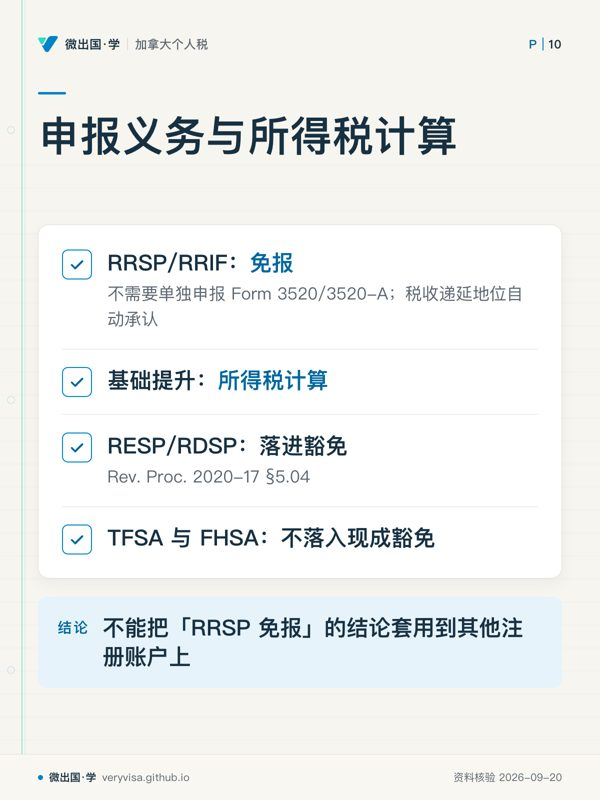
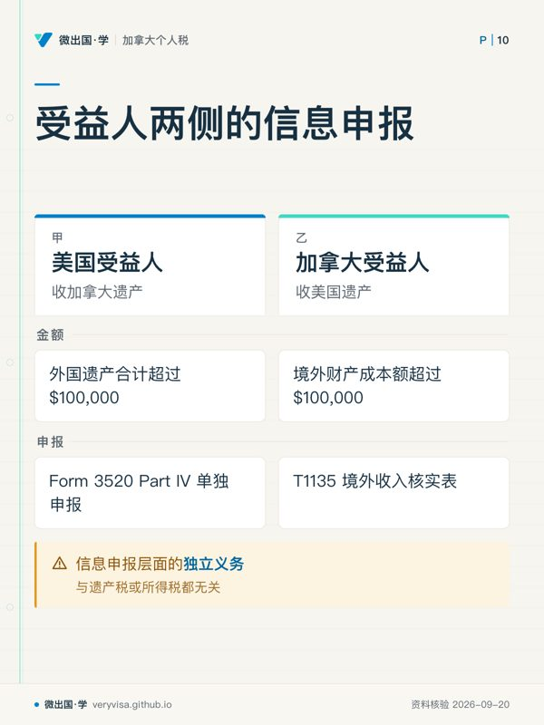

核实日期：2026-09-05｜现行口径：2026 税年（2027 年申报季）｜复核：2027-01-31（含美国联邦遗产税免税额、3520 门槛两项年度指数化数字）。 法条依据：《加美所得税协定》(Canada–U.S. Income Tax Convention, 1980) 第 XXIX B 条及新增该条的 1995 年第三号议定书、修改其第 1/5 款的 2007 年第五号议定书（IRS（Treasury 条约文本））；美国联邦遗产税与所得税依据 Internal Revenue Code 及 IRS 现行表格说明；加拿大侧依据《所得税法》(Income Tax Act, ITA)。
一个持美国护照、长年定居在大温哥华或维多利亚的人去世了。这不是一件事，是两件互不相认的事同时发生：在美国，联邦国税局 (Internal Revenue Service, IRS) 按「公民」这个身份，要求申报他的最终所得税、他名下新生的遗产所得税、以及（金额够大时）他的遗产税；在加拿大，加拿大税务局 (Canada Revenue Agency, CRA) 完全不管他的国籍，只按他「死亡时是加拿大税务居民」这一件事，要求申报最终申报表并对他全部资本财产做一次视同处置。这一页写给三种人：刚被指定为执行人 (executor / personal representative)、面对两国税表不知从何下手的家属；想把跨境遗产业务做扎实的报税学员；以及想提前弄清楚「我这个美国身份将来会给家人添多少麻烦」的读者。读完你应该能做到三件事：把执行人要走的两条时间线（美方四张表、加方两张表）按先后顺序排出来；判断这份遗产要不要真的缴美国遗产税、要不要仅为保留配偶的免税额结转 (DSUE) 而申报；说清楚两地税什么时候能互相抵免、什么时候不能。
配套练习：40
一、制度设计与底层逻辑：两套互不相认的征税权，叠在同一个人身上
1.1 为什么会有「两条时间线」
美国是全世界少数按公民身份征税 (citizenship-based taxation) 的国家：只要还是美国公民，无论住在哪、赚的钱在哪、死在哪，都要向 IRS 报税、报遗产。加拿大是居民身份征税 (residence-based taxation)：只要死亡时是加拿大税务居民，全部资本财产在死亡前一刻就被视同按公允市价 (fair market value, FMV) 处置一次 (ITA s.70(5)(a)，加拿大联邦法规库)。
这两条规则的立法目的完全不同——美国遗产税的底层逻辑是防止财富无代际税负地永久传承；加拿大的视同处置是关掉资本利得递延到死亡也不结账的那个口子（详见 ca-estate-01-deceased-final-return 一、1.1）——协定不会、也无意把它们合并成一套规则。第 XXIX B 条只做一件事：在两边都收到钱的地方，划出谁先收、谁再退一点，避免同一笔财产被两边全额课两次税。它不改变任何一边的国内法。
1.2 谁与谁在博弈
这里其实是四方，不是两方：
执行人 vs 两个税局。 美国这边的核心矛盾是「要不要真的缴遗产税」——2026 年的免税额高达 $1,500 万，多数移民家庭的全球遗产根本到不了这个门槛，但门槛以下不等于什么都不用做（见 §2.3）。加拿大这边的核心矛盾是视同处置的公允市价怎么定——私人公司股份、跨境的未上市权益，定价一旦被 CRA 挑战，两地的应税所得都要跟着重算。
美国受益人 vs 3520 申报义务。 收遗产在加拿大不课税、在美国也不课税，但美国公民/居民受益人从「外国遗产」（对 IRS 而言，加拿大遗产就是外国遗产）收到超过 $100,000 的分配，必须单独申报——不报不是漏税，是漏一张信息申报表，罚则却是实打实的（§2.6）。
两地执行人各自的会计师 vs 彼此。 这是本页要反复强调的一点：美方与加方的税务顾问如果各干各的，Art. XXIX B(6)/(7) 的双向抵免机制不会自动生效——两边都得知道对方算出了多少税、用哪个身份申报，才能把抵免额填对。
1.3 错报的法律后果
美方：Form 706 迟报，罚款按月累加（未缴税款的 5%/月，封顶 25%，另加迟缴利息）；更隐蔽的代价是DSUE 一旦超过五年补选窗口没申报，配偶的那份免税额永久丢失（§2.3、§七）。加方：视同处置的所得漏报，正常复评期 3 年，若被认定为疏忽或蓄意漏报可无限期重开（ca-estate-01-deceased-final-return 一、1.3 已展开，此处不重复）。3520 逾期，处罚是应报金额的 5%/月，封顶 25%（IRS）。
二、2026 税年现行规则与数字：美方四张表 + 加方两张表
2.1 美方第一张表：逝者的最终 Form 1040
死亡当年 1 月 1 日到死亡日为止的收入，报在逝者的最终 Form 1040上。三个跨境读者容易漏掉的点：
联合申报的窗口很窄。 如果配偶在死亡当年、或次年逝者报税前尚未再婚，可以以「Filing as surviving spouse」的身份合报——但前提是配偶本身也是美国公民或居民纳税人。如果配偶是加拿大人、从未对美国所得税身份做过选择，就没有这条路可走，只能按已婚分别申报或另作身份认定，这一步判错会牵连整份最终申报的税率级距。
申报期限跟着「境外美国人」走，不是跟着「已故」走。 逝者在世时若人在加拿大，属于「居住在美国境外的美国公民」，其最终申报自动享有到 6 月 15 日的两个月延期（不需要额外申请，IRS）；但缴税期限仍是 4 月 15 日，延期只延申报不延缴税，逾期部分照算利息。
退税用 Form 1310。 若最终申报显示退税，且申报人不是以「代理配偶」身份签字，必须附 Form 1310 才能领到退税支票——这是考试口径（xb-us-deceased-2021）里明确写过、且现行规则完全没变的一条程序，属于本页少数「考试口径没过时」的地方。
2.2 美方第二张表：遗产所得税 Form 1041
死亡次日起，逝者的遗产在美国税法上也是一个独立的所得税主体（与加拿大把遗产当遗嘱信托 (testamentary trust) 报 T3 是并行的两套制度，互不替代，参见 ca-estate-02-estate-t3-trust-reporting）。
申报门槛是两条并列的「或」，不是「且」。 一个国内遗产 (domestic estate) 只要满足以下任一条就必须报 1041：当年毛收入 (gross income) $600 或以上；或受益人中有非居民外国人 (nonresident alien)（IRS）。第二条极容易被忽略——一份加拿大遗产如果收益微薄、远低于 $600，但受益人里有一位持加拿大护照、从未在美国报过税的家人，这一条单独就触发申报义务。
$600 这个数字本身，是极少数「考试口径没有过时」的地方。 它是 IRC §6012(a)(3) 的法定值，从未随通胀调整，考试口径（2020 税年版）与 2026 税年完全相同（IRS）。同一个数字还有第二重身份：非末年的遗产可以扣一笔 $600 免税额（末年降为零，因为遗产要把收入全部分配出去结束）。
估算年 (fiscal year) 选择只有一次。 遗产的第一个税年可以选到死亡日次月起算的任意月末为止（最长 12 个月），选好之后这个年结日就定了申报与缴税的所有截止日——选在什么时候最省税，取决于遗产当年预计有多少所得、受益人的边际税率高低。
663(b) 的 65 天窗口是遗产管理的实务安全阀。 死亡次年年结日后 65 天内做出的分配，可以选择视为在遗产上一个税年内完成——这让执行人不必赶在 12 月 31 日前把每一笔钱都分完，也是遗产得以「关账」的常见工具（考试口径 xb-us-deceased-2021 p02 有完整机制说明，属结构参照，本页不逐字转述）。
DNI 决定谁交这笔税。 遗产的收入分配扣除 (income distribution deduction) 以可分配净所得 (distributable net income, DNI) 为上限；分给受益人的那一部分随 Schedule K-1 转嫁给受益人个人申报纳税，遗产自己只对留存部分交税——遗产的边际税率级距压缩得极窄，2026 年前 37% 顶格税率的门槛只有约 $15,650（属逐年调整值，本页不展开，年度数字见 kb-02-numbers-2026），这也是为什么执行人往往倾向尽快把所得分配出去，而不是留在遗产里滚存。
2.3 美方第三张表：Form 706，遗产税——三列表

Form 706（United States Estate (and Generation-Skipping Transfer) Tax Return）法定强制申报门槛比较的是全球遗产总值，加上 adjusted taxable gifts 与相关旧制 specific exemption（美国公民按全球资产计算，与仅按美国境内资产计算的非居民外国人 Form 706-NA 是两回事，见 xb-04-us-estate-tax-for-canadians 与 的对照）之和是否超过当年基础免税额 (basic exclusion amount)。低于门槛仍可能为 portability 自愿申报。这个数字这三年跳动很大，必须按年份分列：
| 死亡年份 | 基础免税额 | 状态 | 出处 |
|---|---|---|---|
| 2024 税年 | $13,610,000 | 已生效（TCJA 加倍条款按原定时间表指数化） | IRS |
| 2025 税年 | $13,990,000 | 已生效（OBBBA 签署前已公布，未被追溯修改） | IRS |
| 2026 税年（现行） | $15,000,000 | 已生效（One Big Beautiful Bill Act §70106 一次性抬升，非常规通胀幅度，2027 起才恢复年度指数化） | IRS |
考试口径 xb-us-deceased-2021 讲的是 2020 税年 $11,580,000 / 2021 税年 $11,700,000 的口径——与 2026 现行值已经相差超过 $330 万，读这本考试口径时要把这条当历史值读，不能当现行规则用。
门槛以下不等于什么都不用做——这是全页最容易漏的一步。 三件事即使遗产远低于免税额也可能仍然要做：
- 申报期限固定是 9 个月，逾期自动可申请 Form 4768 延长 6 个月（IRS），考试口径与现行完全一致，属长青机制。
- 想把逝者未用完的免税额结转给在世配偶（DSUE，deceased spousal unused exclusion），必须及时申报 Form 706 才能选择——不申报，这份免税额白白作废，配偶将来自己的遗产就少了这笔额度（§七展开）。
- 就算当初完全错过了 9 个月加 6 个月的窗口，Rev. Proc. 2022-32 给了到死亡五周年为止的补选机会，专供「本来没有申报义务、只是想拿 DSUE」的遗产使用（IRS）——这条 2021 年的考试口径完全没提到，因为它 2022 年才发布。
2.4 基础提升 (step-up) 与加拿大侧的对照
美国联邦所得税规则下，资本资产在持有人死亡时，继承人取得的成本基础通常提升到死亡日（或替代估价日）的公允市价（IRC §1014）。恰好，加拿大的视同处置也是按同一时点的公允市价结算——对逝者名下的非注册资产（房产、非注册投资账户、私人公司股份）而言，两地的「新基础」在数值上通常是同一个数，这也是为什么第 XXIX B 条能够用「对方那边已经因为这同一次财产转手交了多少税」来算抵免额。
RRSP/RRIF 是个例外，不获得基础提升。 它们在美国税法上被当作类似「传统 IRA」的递延所得账户：账户里从未纳税的部分是「应享未享的所得」(income in respect of a decedent, IRD)，将来提取时仍要按普通所得税率计税，不因为持有人去世就洗掉这笔应税所得（考试口径 xb-us-deceased-2021 p02 的 Jack Sage 例题讲的正是 IRD 这个机制，本页只借用其结构，数字与人名均为考试口径示例、非本页原创）。这一条经常被家属和不熟悉跨境规则的会计师同时看漏——以为「人没了，账户资产就重新计算成本了」，RRSP 恰恰不适用这条。
顺带一提：RRSP/RRIF 的税收递延地位本身，靠的是协定第十八条第七款与 Rev. Proc. 2014-55 自动承认，不需要每年选择，也不需要就它单独申报 Form 3520/3520-A（IRS）——这与「RRSP 有没有基础提升」是两个完全不同的问题，前者管的是申报义务，后者管的是所得税计算，混为一谈是常见错误。遗产里如果还有 RESP、RDSP、TFSA、FHSA，这四类账户在 3520 申报上的定性各不相同——RESP/RDSP 落进 Rev. Proc. 2020-17 §5.04 的豁免，TFSA 与 FHSA 不落入任何一条现成豁免，执行人不能把「RRSP 免报」的结论套用到其他注册账户上，详细判断表见 us-intl-03-tfsa-resp-3520。
2.5 双向抵免：Art. XXIX B(6)(7)，按财产坐落地分工
美国遗产税与加拿大死亡时的所得税是两笔性质不同的税——一个是遗产税、一个是资本利得所得税——理论上会对同一笔财产的换手全额双重课税。协定第 XXIX B 条第 6、7 款各管一半，按财产坐落地分工，不是任选一条（IRS（Treasury 条约文本））：
- 第 6 款：美国境内财产上缴的美国联邦或州遗产税，在第 6 款限额内抵减加拿大死亡年度有关美国来源所得或利得的税；全球遗产超过 US$1.2 million 时按条文扩大财产所得口径。逝者为美国公民时，可计入的美国遗产税另以假设其非美国公民时的金额为上限，不能把因公民身份多征的部分全拿回加拿大抵。
- 第 7 款：美国境外财产（对一个住在加拿大的人来说，这通常是大部分资产）因死亡而缴的加拿大联邦与省所得税，可以抵扣美国遗产税——且第 7 款明文限定适用于「死亡时是美国居民或公民」的个人，这正好覆盖「美国公民住在加拿大」这个人群。
两条抵免都是申报制，不主张就不会自动出现在税单上；用协定立场必须附 Form 8833（IRS（Treasury 条约文本））。这也是 §一 1.2 说「两边会计师各干各的会漏抵免」的具体落点：加方算出的视同处置所得税额，必须在美方 706 上作为第 7 款抵免主张出来，两份税表要互相引用对方的数字。
2.6 受益人两侧：3520 与 T1135
美国受益人收加拿大遗产。 遗产本身不课所得税，但美国公民/居民从「外国遗产」收到的赠与或遗赠合计超过 $100,000（这是法定固定值，不随通胀调整），必须在 Form 3520 Part IV 单独申报，超过 $5,000 的单笔还要逐笔列明（IRS）。不申报不欠税，但罚则是应报金额的 5%/月、封顶 25%——这是一张信息申报表，不是税表，家属最容易以为「反正不用交税就不用管」。
加拿大受益人收美国遗产。 加拿大不对继承本身征税，这一点与遗产从哪个国家来无关。但受益人如果因此持有了境外（对加拿大受益人而言，美国资产就是境外）财产，成本额一旦超过 $100,000，就要留意 T1135 境外收入核实表的申报义务（加拿大联邦法规库，详见 ca-residency-04-t1135-foreign-property）——这与遗产税或所得税都无关，是信息申报层面的另一条独立义务。
2.7 执行人自己要交的一张表：Form 56
执行人一旦被指定，应尽快向 IRS 提交 Form 56（Notice Concerning Fiduciary Relationship），告知 IRS 谁在代表这个遗产处理税务、会申报哪些表（1040、1041、706 等）。这张表不产生任何税负，纯粹是身份通知，但没报这张表，IRS 的往来信件、退税支票、催缴通知都可能寄错对象或产生代理权争议。
三、实务流程：两条并行的时间线
3.1 美方时间线
死亡当天起：① 尽快提交 Form 56；② 通知各金融机构、雇主，防止继续按逝者身份报所得；③ 判断遗产估算年年结日。到 4 月 15 日（境外美国人自动延到 6 月 15 日，缴税期限仍是 4/15）：申报逝者最终 Form 1040，需要退税时附 Form 1310。到 9 个月：判断是否需要真实申报 Form 706（对比全球总值与当年基础免税额），即使不需要真实申报，也要判断是否要为保留 DSUE 而申报；来不及就先报 Form 4768 拿 6 个月延期。此后每年：遗产按自选估算年年结，年结后 3.5 个月内申报 Form 1041，年结后 65 天内可用 663(b) 选择计入上一估算年，分配部分随 K-1 转给受益人各自申报。
3.2 加方时间线（详见 ca-estate-01-deceased-final-return 与 ca-estate-02-estate-t3-trust-reporting）
死亡当天：资本财产视同按 FMV 处置（配偶滚转除外）。次年 4 月 30 日或 6 月 15 日（自雇）或死亡日后 6 个月（取更晚者）：最终 T1 申报。死亡次日起：遗产作为遗嘱信托，若符合条件可选遗产级累进税率遗产 (Graduated Rate Estate, GRE) 身份（36 个月内），按自选年结日报 T3。
两条时间线放在一起看：美国那条以「9 个月」为节点，加拿大那条以「次年 4 月 30 日／6 月 15 日」为节点，两个节点通常相差好几个月——执行人容易只盯着先到期的那一条，把另一条的截止日忘在脑后。稳妥的做法是从死亡日起就同时开两张倒数日历，而不是做完一边再想起另一边。
四、联邦之外：BC 遗产认证费，以及美国境内不动产的域外认证
美国那三张联邦表（1040、1041、706）之外，还有两层与「联邦税」完全无关、却同样卡在这条时间线上的程序：
第一层：BC 遗产认证费，不是所得税，也不是遗产税。 无论逝者是不是美国公民，只要死亡时通常居住在 BC、遗产需要走认证 (probate)，就要按《遗产认证费法》(Probate Fee Act, SBC 1999 c.4) 缴一笔省级收费：$25,000 以下免收，超过部分边际约 1.4%（King's Printer, British Colu…，详见 ca-estate-02-estate-t3-trust-reporting 一、2）。这笔费用按遗产全球无形动产 + BC 境内不动产与有形动产的毛值计算，与美国那边估遗产价值经常用的是同一批数字——执行人可以把两份估值工作合并委托同一组估价师，不必分别做两次。这笔省级费用与美国 706 之间没有任何抵免关系：它不是所得税也不是遗产税，Art. XXIX B(6)(7) 的双向抵免管的是「所得税」与「遗产/继承税」之间的相互抵免，probate fee 落在这两者之外，两边各付各的，谁也抵不了谁。
第二层：美国境内不动产的域外认证 (ancillary probate)。 如果逝者名下有美国的房产，除了联邦 706（若适用）之外，房产所在的那个州通常还要求单独走一次当地法院的遗产认证——这与 BC probate、与联邦 706 是三件完全独立的程序，各有各的费用、各有各的律师、各有各的时间表。执行人如果只请了一位 BC 的遗产律师，很可能根本不知道美国那套房产需要在当地另聘律师走一轮认证，等到想卖房或过户时才发现卡在这一步——这也是为什么跨境遗产从一开始就该请两地各一位熟悉遗产认证的专业人士，而不是等出问题才补。
五、历史变革：从「各判各的」到「按坐落地分工的双向抵免」
1980 年签署的加美所得税协定原文完全没有提到遗产税——两国各自按本国法全额征税，同一笔跨境财产被两边全额课两次税是当时的常态，唯一的缓解手段是各自国内法里单方面给的外国税收抵免，覆盖并不完整。1995 年 3 月 17 日签署的第三号议定书第一次把 Article XXIX B（Taxes Imposed by Reason of Death）写进协定，建立了统一抵免比例分摊（第 2、3、4 款）与本页 §2.5 讲的双向抵免（第 6、7 款）机制。2007 年第五号议定书改写第 XXIX B 条第 1 与第 5 款，没有改写本节所述第 6/7 款双向抵免（2007 协定原文；IRS（Treasury 条约文本） 的旧合订本仅至第四号议定书）；此后近十八年，协定再未实质修订——本课把这一条列为「长青可以放心讲」的内容。
美国国内法这一侧，基础免税额本身的走势更能说明「考试口径几年就作废」这件事：2017 年年底前的免税额约 $549 万；2018 年生效的 2017 年减税与就业法案 (Tax Cuts and Jobs Act, TCJA) 把它临时翻倍，此后按年通胀调整，一路涨到 2025 年的 $1,399 万；这项翻倍条款原定 2026 年不再单独设值,回落到无 TCJA 状态（届时会近似跌回约 $700 万附近的水平），但 2025 年 7 月 4 日签署的 One Big Beautiful Bill Act (OBBBA) 在悬崖到来前，把 2026 年的免税额一次性抬到 $1,500 万并永久化，取消了原定的回落——这是本课极少数「考试口径过时的方向反而是低估现行值」的例子（大部分考试口径过时的方向是数字变小或规则收紧，这里是数字变大）。
六、案例（人物与数字均为示例）
案例一 · 列治文的退休工程师
Robert 持美国护照，退休后与太太 Grace（同时持美国与加拿大国籍）定居列治文三十年，2026 年去世。全球遗产总值约 $280 万：BC 自住房 $150 万、RRSP $20 万、TFSA $10 万、非注册投资账户 $30 万、美国经纪账户 $30 万、美国某州一套度假屋 $40 万。执行人（他们的儿子）算出 $280 万远低于 $1,500 万的免税额，判断「用不着理会美国那边」，706 完全没报。 三年后 Grace 也去世，她的执行人才发现：Robert 走的时候本可以申报 706（哪怕金额为零）来把他未用完的免税额结转给 Grace，Grace 可在适用规则下使用 Robert 未用的 DSUE；它是固定金额，并非保证未来免税额恰好翻倍；现在窗口早已过了 9 个月加 6 个月，唯一的补救是靠 Rev. Proc. 2022-32 的五年补选期——所幸距 Robert 去世还不到五年，赶上了最后期限；若拖过五年，简化补选通道关闭，需另评估个别裁定救济，不能保证获准（这在遗产规模较小的家庭里通常无关痛痒，但一旦其中一方名下有快速增值的私人公司股权或房产，DSUE 能省下的税额可能是六位数）。
本案例特意设定未亡配偶也是美国公民。若配偶是非美籍非美国住所地居民，IRS 明定原则上不能使用 DSUE（条约允许的范围另论）；不能照搬“双倍免税额”的结论。参见 Form 706 instructions, Part VI。
案例二 · 温哥华的独立顾问
Linda 是美国公民，独自在温哥华经营多年咨询生意，2026 年去世，全球遗产 $1,800 万（含公司股权、投资组合与一套西区房产），超过 $1,500 万门槛，须真实申报 706 并缴纳美国遗产税。她在加拿大这一侧，全部资本财产视同处置，产生了可观的资本利得税（按现行 ½ 纳入率计入应税所得，见 ca-invest-02-capital-gains）。执行人分别请了美国的遗产律师与加拿大的会计师，两人从未通过话——美方按全球总值算出的遗产税额，没有把加拿大已缴的所得税（对应第 7 款可抵免的部分）算进去；加方也不知道美方已经把哪些财产计入了遗产税基数。补救是两边重新对账：把 CRA 出具的最终申报评税通知拿去支持美方 Form 706 上按 Art. XXIX B(7) 主张的抵免，并附 Form 8833 声明协定立场——这一步补回来，实际双重缴税的部分大幅下降，但比起一开始就同步处理，多花了近一年时间与两轮专业费用。
案例三 · 两地受益人的落差
David（Robert 与 Grace 的儿子，美国公民，住西雅图）与 Amy（他们的女儿，只有加拿大身份，住素里）共同继承一笔加拿大遗产，David 那一份分配 $150,000。David 完全没意识到自己要报 3520——他没欠税，但因为「不欠税」误以为「不用报」，被追罚应报金额的 5%/月。Amy 那一份如果换成继承一笔美国遗产，她本人在加拿大不需要为「继承」这件事交任何税，但如果她因此持有了美国资产、且境外财产成本累计超过 $100,000，就要记得把这笔资产放进自己下一年的 T1135 里。
这个案例还牵出一个容易被忽略的时间点：David 收到的那笔 $150,000，如果是美国遗产在其第一个估算年内分配的，会连带一张 Schedule K-1，把这部分所得的性质（利息、股息还是资本利得）按 DNI 比例摊给他，David 报个人 1040 时要把这部分收入并进去；如果执行人选的估算年年结日恰好落在跨年的位置，K-1 到手的时间可能比想象中晚，David 容易在还没收到 K-1 前就先报了当年的 1040，之后还要补一张修正申报——这也是为什么执行人在选估算年年结日时，除了考虑遗产自己的税负，还该替受益人的报税节奏想一步。
七、常见错报与自查清单
- 「金额远低于免税额，就完全不用碰美国这边」——识别：只要遗产里有配偶且配偶身份符合条件，先问一句「有没有为保留 DSUE 申报」，不是问「要不要缴税」。
- 两地会计师互不沟通——识别：问执行人「加拿大这边算出的最终应税所得，有没有拿给美国那边的遗产税申报用」；答不上来就是没做双向抵免。
- 把 RRSP 当成和非注册账户一样「重设了成本」——识别：任何涉及 RRSP/RRIF 遗产分配的规划，先确认对方知不知道 IRD 这个词。
- 受益人以为「不用缴税」等于「不用申报」——识别：美国受益人收到跨境遗产分配超过 $100,000，先查有没有报 3520 Part IV，与要不要缴税完全无关。
- 只做了美国联邦 706 的规划，忘了 BC probate fee 与美国当地 ancillary probate 是另外两件事——识别：问执行人「BC 这边的遗产认证费算过没有，美国那套房产在当地要不要单独走认证」。
- 把 706-NA 与 706 弄混——识别：美国公民的遗产永远是 706（按全球资产），706-NA 只用于非美国公民的非居民（详见
xb-04-us-estate-tax-for-canadians）；两张表的税基、申报门槛、扣除与可用抵免不同；不能因此推成两套完全不同的累进税率。 - 执行人自己没报 Form 56 就直接以家属身份跟 IRS 打交道——识别：问执行人「有没有单独通知过 IRS 谁是这个遗产的受托人」；没报 Form 56，退税支票、催缴信随时可能寄错人。
术语双语表
| English | 中文 | 一句机制 |
|---|---|---|
| citizenship-based taxation | 公民身份征税 | 美国不论居住地，只按公民身份主张全球征税权 |
| Form 1040 | 美国个人所得税表 | 逝者最终申报用；境外美国人自动延到 6/15，缴税期限仍是 4/15 |
| Form 1310 | 退税领取声明表 | 非「代理配偶」身份申领逝者退税必须附 |
| Form 1041 | 美国遗产/信托所得税表 | 毛收入 ≥$600 或受益人含非居民外国人即须报 |
| DNI | 可分配净所得 | 遗产所得税分配扣除的上限，也是受益人 K-1 应税额的依据 |
| Schedule K-1 (Form 1041) | 受益人分配明细表 | 把遗产已分配的所得性质与金额转嫁给受益人个人申报 |
| §663(b) election | 65 天分配选择 | 年结后 65 天内的分配可视为上一估算年完成，便利遗产结账 |
| Form 706 | 美国遗产税申报表 | 美国公民/居民按全球总值申报，超基础免税额部分缴税 |
| Form 706-NA | 非居民非美籍遗产税表 | 通常 $60,000 美国境内资产申报门槛；加拿大居民的条约抵免另算，详见 xb-04 |
| basic exclusion amount | 基础免税额 | 706 的核心门槛，2026 因 OBBBA 一次性抬到 $1,500 万 |
| portability / DSUE | 免税额可携带 / 未用免税额结转 | 须及时申报 706 才能选，错过窗口按 Rev. Proc. 2022-32 有五年补选期 |
| Form 4768 | 706 延期申请表 | 9 个月申报期的自动 6 个月延期 |
| step-up in basis | 基础提升 | IRC §1014：资本资产在死亡日按 FMV 重设成本，RRSP/RRIF 例外 |
| income in respect of a decedent (IRD) | 应享未享的所得 | 逝者生前赚得、死后才实现的所得，继承人取得时仍需按普通税率计税 |
| Form 56 | 受托关系通知表 | 执行人向 IRS 通报身份与代理范围，不产生税负 |
| Article XXIX B | 协定第 XXIX B 条 | 1995 年第三号议定书新增，专管跨境死亡税的抵免与分摊 |
| unified credit（比例分摊） | 统一抵免比例分摊 | 加拿大居民（非美国公民）的遗产按美国资产÷全球资产分摊美国公民抵免额 |
| Form 8833 | 协定立场披露表 | 主张 Art. XXIX B 任一抵免都必须附 |
| Form 3520 | 外国信托与外国赠与申报表 | 美国人收外国遗产/赠与超 $100,000 须报 Part IV，不欠税也要报 |
| T1135 | 境外收入核实表 | 加拿大受益人持境外财产成本超 $100,000 须报，与所得税无关 |
| probate fee | 遗产认证费 | BC 省级收费，非所得税，免征线 $25,000，边际约 1.4% |
| ancillary probate | 域外遗产认证 | 逝者在其他司法管辖区（如美国某州）名下有不动产时，当地另需的认证程序 |
| Graduated Rate Estate (GRE) | 遗产级累进税率遗产 | 加方遗产 36 个月内可选身份，按累进税率报 T3（详见 ca-estate-02） |
来源
- 加美所得税协定原文（1980 公约 + 议定书 1–5）：https://www.irs.gov/pub/irs-trty/canada.pdf （IRS（Treasury 条约文本））
- 加拿大居民的美国遗产税门槛（706-NA，$60,000）：https://www.irs.gov/individuals/international-taxpayers/some-nonresidents-with-us-assets-must-file-estate-tax-returns （IRS）
- Form 3520 外国赠与门槛：https://www.irs.gov/businesses/gifts-from-foreign-person （IRS）
- FBAR 官方说明：https://www.irs.gov/businesses/small-businesses-self-employed/report-of-foreign-bank-and-financial-accounts-fbar （IRS（代 FinCEN 说明））
- 境外美国人的申报期限：https://www.irs.gov/individuals/international-taxpayers/us-citizens-and-resident-aliens-abroad （IRS）
- T1135 门槛（ITA s.233.3）：https://laws-lois.justice.gc.ca/eng/acts/i-3.3/section-233.3.html （加拿大联邦法规库）
- RRSP/RRIF 免 3520/3520-A（Rev. Proc. 2014-55）：IRS
- ITA s.70 死亡视同处置：加拿大联邦法规库
- BC 遗产认证费法：King's Printer, British Colu…
- 2024 税年基础免税额（Rev. Proc. 2023-34 §3.41）：https://www.irs.gov/pub/irs-drop/rp-23-34.pdf （IRS）
- 2025 税年基础免税额（Rev. Proc. 2024-40 §3.41）：https://www.irs.gov/pub/irs-drop/rp-24-40.pdf （IRS）
- 2026 税年基础免税额（Rev. Proc. 2025-32 §.14，OBBBA）：https://www.irs.gov/pub/irs-drop/rp-25-32.pdf （IRS）
- Instructions for Form 706（申报期限、Form 4768、portability、Rev. Proc. 2022-32）：https://www.irs.gov/instructions/i706 （IRS）
- Instructions for Form 1041（申报门槛与 $600 免税额）：https://www.irs.gov/instructions/i1041 （IRS）
本页知识卡
不看正文也能拿到这一节的核心内容：先看导读，再看图。点图放大，左右翻页。
- 先看先看右栏，例外不在申报，而在死亡后的成本处理。
- 易漏最容易漏的是把「人没了，账户资产就重新计算成本了」套到 RRSP 上。
- 下一步去讲解，继续追 IRD 在提取时如何计税。

- 先看先把前两项分开：一个问要不要报，一个问税怎么算。
- 易漏四类其他注册账户的 3520 定性不一致，尤其 TFSA、FHSA 没有现成豁免。
- 下一步去讲义，逐个账户核对申报结论。

- 先看先看两栏的金额口径：一边是收到遗产，一边是持有境外财产。
- 易漏美国一侧超过 $5,000 的单笔还要逐笔列明；不申报罚则是 5%/月、封顶 25%。
- 下一步去练习，分别判断该看 Form 3520 还是 T1135。